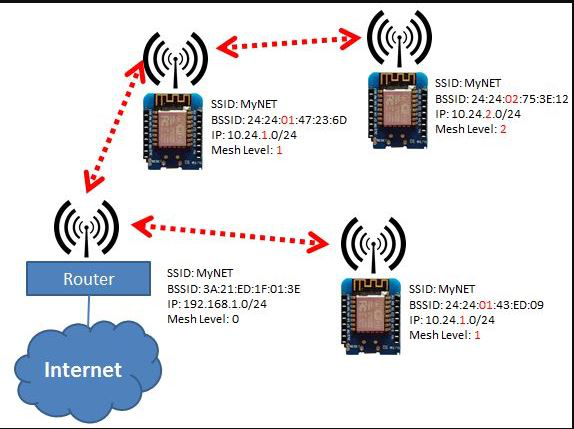
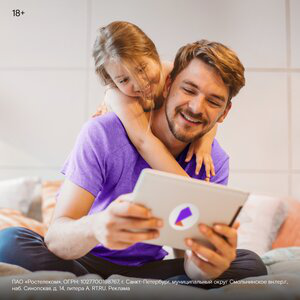
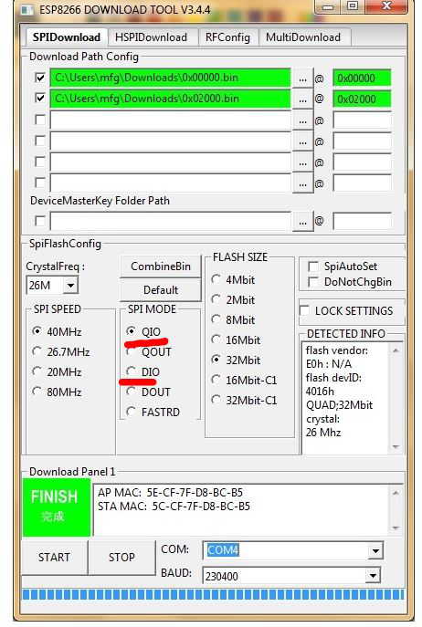
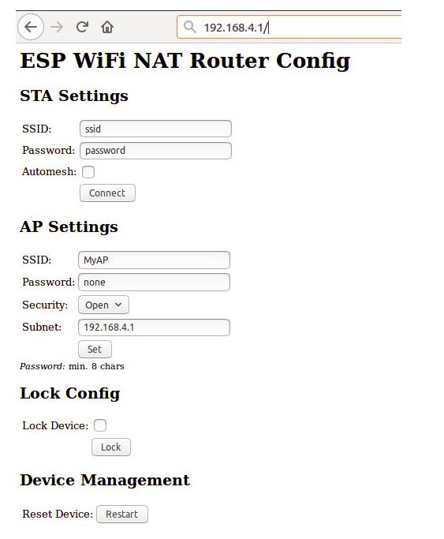

Wi-Fi репитер на esp8266
27 января, 2022

Работает на ESP8266: http://alii.pub/686pdk
по этой же ссылке можно найти wemos с rca разъемом для подключения внешней антенны, что в свою очередь увеличит wi-fi сигнал и диапазон охвата.
Прежде чем приступить к материалу, я Вас попрошу, если нравится то, что я делаю и хотите следить за моей деятельностью, то рекомендую подписаться на мой телеграмм канал: https://t.me/ypavla
Там я публикую новости о вышедших видео, статьях и разные устройства для умного дома и не только показываю.
Спасибо за внимание, теперь продолжим.
Данный проект взят из github: https://github.com/martin-ger/esp_wifi_repeater
Данный проект как оказалось очень крутой. И у него практически нет недостатков.
Давайте поговорим о плюсах:
Ну и недостатки конечно тоже есть, хоть и меркнут на фоне преимуществ:
Но на самом деле – этой скорости даже хватает ютуб посмотреть. Правда в 720p. Да и он предназначен не для видео я думаю. А для расширения вашей сети. Например к нему подключить разные устройства умного дома( чтоб основную сеть не засирать) а для таких устройств скорости в 1 мбит заглаза.
Установка:
РЕКЛАМА
market.yandex.ru
Нож для точного реза с автостопом GRAND-9, сегмент...

РЕКЛАМА•16+
rt.ru
Скоростной домашний интернет от РОСТЕЛЕКОМ за 0₽/месяц
Давайте теперь поговорим про установку. Она тут предельно простая. Скачиваем архив проекта со странички github: https://github.com/martin-ger/esp_wifi_repeater
Там в папке firmware найдете 3 файлика с расширением .bin:
0x00000.bin
0x02000.bin
Нам понадобятся только эти 2 файла. Устанавливаются они с помощью программы esp downloads tool.
Для загрузки прошивки через эту программу, нужно выставить эти параметры:

Тут обратите внимание на SPI mode. Дело в том, что на скрине стоит галочка у пункта QIO. Но у меня при таком раскладе контроллер nodemcu не запустился.А когда прошил с модом “DIO” контроллер запустился и я смог корректно работать.
Еще один момент при первом запуске. Это то, что нужно хорошее питание. Иначе тоже может не заработать. ТАк-как программа довольно сильная и много ресурсов кушает. От этого и сама ESP8266 много энергии тратит.
После корректной прошивки при первом запуске у нас должна появиться новая wi-fi сеть под названием “MyAP” без пароля.
После того как мы к ней подключимся мы получим ip адрес 192.168.1.2
Откроем браузер и вобьем туда адрес 192.168.1.1 – это адрес нашего контроллера и откроется web интерфейс для его настройки.

Тут давайте разберемся по блокам. Первый блок это “STA Settings”
В этом блоке Вы указываете к какой WI-FI сети хотите чтоб подключился ваш репитер esp8266.
Если поставить галочку automesh, то больше настройки никакие производить ненужно. Ваш контроллер перезагрузится и всегда будет раздавать сеть с таким же SSID как Ваша основная сеть. Скажем так – это режим бесшовной сети. Но тогда у Вас скорость будет поменьше, так как данный режим кушает еще больше ресурсов микроконтроллера.
Второй блок настроек это “AP Settings”
Тут Вы указываете SSID под которой будет появляться ваш репитер в wi-fi устройствах. Ну и конечно же пароль к ней.
Если Вы укажете STA настройки но без галочки automesh. Тогда esp8266 тоже будет работать как репитер. Но будет со своим отдельным SSID который указан в “AP Settings”
И подключившись к нему Вы тоже попадете в вашу локальную сеть и все так-же будет работать просто будет дополнительный SSID.
При таком режиме скорость соединения можно достичь выше.
Командная строка:
Расширенную настройку необходимо выполнить через командную строку в интерфейсе консоли. Эта консоль доступна либо через последовательный порт на скорости 115200 бод, либо через TCP-порт 7777 (например, «telnet 192.168.4.1 7777» от подключенной STA).
Я например при таких подключениях использую программу putty.
В CLI довольно много настроек и самое интересное из них это firewall. Но его описывать долго. Все можете найти в описании на страничке github: https://github.com/martin-ger/esp_wifi_repeater
Покажу только какими командами запретить подключаться к адресу 192.168.4.1
acl from_sta clear
acl from_sta IP any 255.255.255.255 allow
acl from_sta UDP any any any 53 allow
acl from_sta IP any xx.xx.xx.xx/24 deny
acl from_sta IP any any allow
Чтоб разрешить обратно подключения, то нужно выполнить такие команды:
acl from_sta clear
acl from_sta IP any 255.255.255.255 allow
acl from_sta UDP any any any 53 allow
acl from_sta TCP any any 192.168.0.0/16 1883 allow
acl from_sta IP any any deny
Ну и если Ваш роутер работает в режиме automesh и вы не хотите искать какой у него ip адрес, а хочется его сбросить на первоначлаьные настройки. То можно подключить его к ПК. Подключиться через ком порт со скоростью 115200 к контроллеру и выполнить следующую команду:
reset factory
Эта команда перещагрузить контроллер и он загрузится с первоначальными настройками. как будто вы только что его прошили.
Ну и все вышеописанное я проделал в видео наглядно там-же и тесты скорости сделал:
vtb.ru
РЕКЛАМА